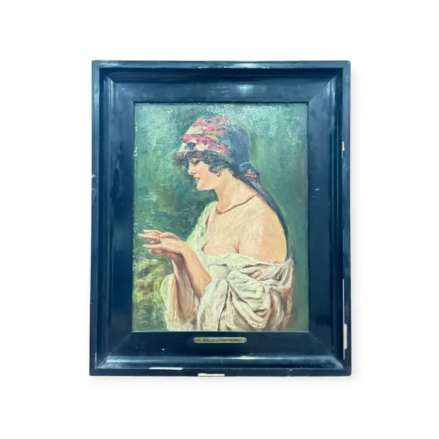
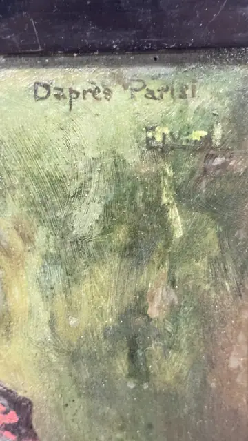
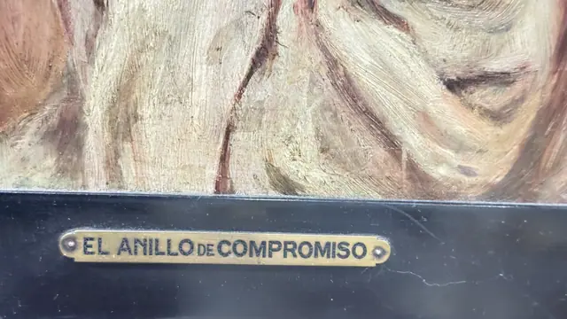
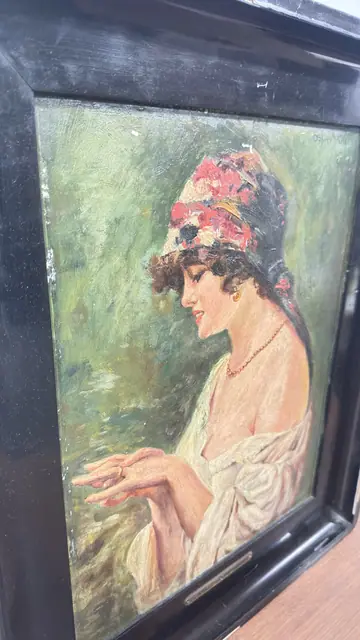

Paintings & Prints
El Anillo de Compromiso, Girl Admiring Her Ring, Signed, Framed
· 20th century
Price Upon Request




About the Item
A half-length portrait of a dark-haired young woman turned in profile, her head wrapped in a red and multicoloured floral scarf and a loose white blouse slipping from one shoulder. She holds her hands before her and looks down at a ring with a small smile. The background is a loose, feathery green woodland worked wet-in-wet, which throws her warm flesh tones and the crisp white drapery forward. Brushwork is fluid and confident, with thick creamy strokes in the blouse and scumbled greens behind. Medium: oil on board or panel. Signed upper left of the picture, in dark paint, reading "Dapres Parisi". Inscribed on the reverse or mount: Dapres Parisi; EL ANILLO DE COMPROMISO. Condition: Surface is dusty with fine scratches and speckling visible in the raking light of IMG_8525; the black frame is scuffed along the outer edges. No losses or tears seen.
Details
- Creation Year:
- 20th century
- Dimensions:
- Height: 23.5 in (59.69 cm)
Width: 19.0 in (48.26 cm)
outside of frame - Medium:
- oil on board or panel
- Period:
- 20Th
- Condition:
- Offered in the condition shown in the photographs.
- Reference Number:
- VO-77
- Documentation:
- no certificate photographed
- Gallery Location:
- Dapres Parisi; EL ANILLO DE COMPROMISO